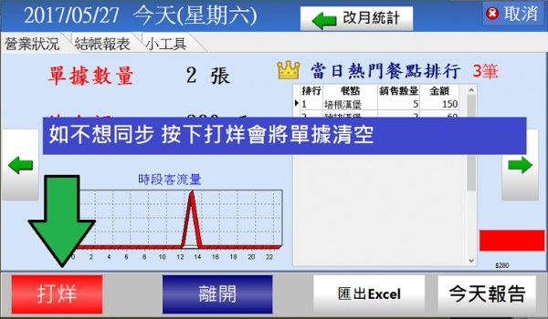

多機互連真的好用.....多機的問題??
不過有發現了一個問題,就是副機應該同步主機 但是目前是如果副機的單號沒有清除
主機的單號會跟著副機同步,EX主機只有5號 但是副機在未連線前是45
連線後會主機會變成45號
2 個回答
您好
這現象是正常的
由於副機支援離線模式 在有時連不上主機的時候 可先暫時離線獨立點單執行 當網路恢復正常 再度連上主機後 會將系統所有單據同步至主機上 此時單號會變成所有單據的最大單號值
依您舉的例子 反過來說
EX主機只有45號 但是副機在未連線前是5號
連線後會主機還是會維持45號
如果副機不想同步目前自己的資料了 請按 "打烊"

知道了,我是用使用平板搭配遠端軟體來實現互連模式,所以副機的電腦就都沒去管他,所以就都會忘記去把副機POS軟體END掉...我在自己注意就好了...謝謝